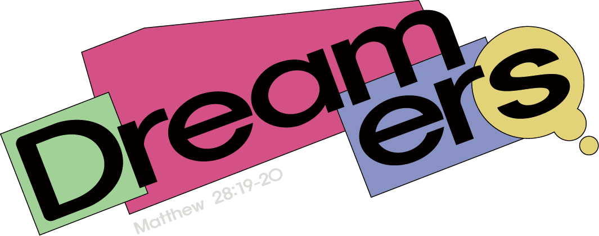

| 프로그램 | 토크쇼 〈BACK TO ’95〉 |
|---|---|
| 일시 | 2026년 11월 4일(수) 20:00 ~ 21:00 (60분) |
| 장소 | 한동대학교 평봉필드 특설무대 및 평봉필드 |
| 형식 | 패널 토크쇼 · ’95 퀴즈와 무대 인터뷰 · 관객 질문 및 사연 나눔 |
| 패널 | 1995년 한동의 초창기를 함께한 95학번 동문 2인 |
| 주관 | 2026 한동대학교 창문축제 TFT 무대운영팀 |
2026년 한동대학교 창문축제에서는 한동이 처음 세워지던 1995년의 이야기를 오늘의 학생들에게 다시 들려주는 토크쇼 〈BACK TO ’95〉를 준비하고 있습니다. 한동의 초창기를 학생으로 함께하고 지금은 각자의 자리에서 한동의 오늘을 이어 가고 있는 95학번 동문을 패널로 모시고, 그들이 처음 한동에 와 마주했던 꿈과 그 생생한 이야기를 지금의 한동인들과 함께 나누고자 합니다. 본 제안서는 〈BACK TO ’95〉의 기획 의도와 구성, 기대효과를 소개합니다.
| 축제명 | DREAMERS |
|---|---|
| 슬로건 | DREAM HERE, GO BEYOND |
| 기간 | 2026년 11월 4일(수) ~ 11월 6일(금) |
| 주제말씀 | 마태복음 28:19–20 |
| 주최 | 2026 한동대학교 창조문화축제 TFT |
한동은 하나님 안에서 꿈을 꾸는 대학입니다. 학생 한 사람 한 사람은 자신의 삶과 진로, 공동체와 세상을 향한 꿈을 품고 살아가지만, 대학생활 속에서 서로가 어떤 꿈을 가지고 살아가는지 깊이 나눌 기회는 많지 않습니다. 2026 창조문화축제 〈DREAMERS〉는 ‘꿈꾸는 자들’이라는 뜻처럼 한동의 모든 구성원을 하나의 Dreamer로 바라보며, 한동 안의 다양한 꿈을 발견하고, 나의 꿈을 돌아보고, 우리가 함께 바라볼 꿈을 나눈 뒤, 그 모든 꿈을 하나님께 맡기는 축제입니다. 이때의 ‘꿈’은 개인의 성공이나 진로 목표를 넘어, 하나님께서 각 사람에게 주신 삶의 방향과 부르심, 그리고 공동체가 함께 바라보는 비전을 의미합니다.
| 일자 | 주제 | 핵심 질문 |
|---|---|---|
| DAY 1 · 11/4(수) | 한동의 꿈 | 한동은 무엇을 꿈꾸고 있는가? ← 〈BACK TO ’95〉 진행일 |
| DAY 2 · 11/5(목) | 나의 꿈 | 나는 무엇을 꿈꾸고 있는가? |
| DAY 3 · 11/6(금) | 우리의 꿈 | 우리는 무엇을 꿈꾸는가? |
〈BACK TO ’95〉는 축제 첫째 날 ‘한동의 꿈’을 여는 프로그램입니다. 하나님께서 한동에게 부어주신 꿈과 사명을 발견하는 첫날, 한동의 시작을 직접 경험한 95학번 동문들의 이야기는 사흘간 이어질 DREAMERS의 출발점이 될 것입니다.
BACK TO ’95는 한동대학교가 ‘하나님의 대학’으로 세워진 1995년, 그 초창기를 함께한 95학번 선배 동문을 초청하여, 한동의 시작과 그 안에 담긴 꿈과 비전을 함께 나누는 축제 토크쇼입니다. 무대 위에서 일방적으로 과거를 회상하는 강연이 아니라, 한동의 시작을 살아낸 선배와 지금의 한동을 살아가는 학생이 직접 만나 대화하는 자리로 기획하였습니다.
토크쇼, ’95 퀴즈와 무대 인터뷰, 학생들이 미리 보낸 ‘꿈’에 관한 사연 나눔으로 이어지는 60분 동안, 패널들이 들려줄 1995년의 장면들은 2026년 학생들의 고민과 만나 한동의 과거·현재·미래를 하나로 잇는 대화가 될 것입니다.
“한동의 꿈은 결국 하나님께서 한동을 세우신 의도, 즉 하나님의 꿈이다.”
1995년의 한동은 건물 한 동이 서 있는 땅에서 시작되었다고 전해집니다. 갖춰진 것은 많지 않았고, 겉으로 보기엔 작고 초라했을지도 모릅니다. 그러나 바로 그곳에서 첫 한동인들은 서로의 꿈을 나누고 한동의 비전을 함께 품으며 오늘의 한동대학교를 일구어 왔습니다. ‘꿈을 꾸고, 그 꿈을 함께 이루어 가는 문화’는 그렇게 시작되었습니다.
그로부터 서른한 해가 지난 지금, 한동의 학생들은 진로와 취업, 성적과 비교 속에서 ‘무엇을 꿈꾸는가’보다 ‘어떻게 살아남을까’를 먼저 묻고 있습니다. 저희는 이 질문의 자리에 한동의 첫 이야기를 다시 놓고자 합니다. 본 프로그램의 기획 의도는 다음과 같습니다.
패널은 1995년, 한동의 초창기를 95학번으로 함께하며 그 시작을 몸소 경험한 동문 2인으로 구성합니다. 한동의 ‘처음’과 ‘지금’을 모두 아는 이들의 대화는 어떤 기록보다 생생하게 한동의 시작을 전해 줄 것입니다. 무대 위의 패널은 강연자가 아닌, 같은 캠퍼스에서 같은 고민을 먼저 지나온 선배로서 학생들과 마주하며 자신의 스무 살 이야기를 나눕니다.
| 시간 | 소요 | 내용 | 패널 참여 |
|---|---|---|---|
| 20:00 ~ 20:05 | 5분 | 오프닝 및 출연자 소개 (사회자가 패널 관련 퀴즈로 소개 후 무대로 모심) | 입장 |
| 20:05 ~ 20:17 | 12분 | 토크쇼 ① 학창 시절, 한동에서의 경험 | 토크 |
| 20:17 ~ 20:27 | 10분 | 토크쇼 ② 95학번 동문들은 어떤 꿈을 가지고 한동에 왔을까? 지금은 어떤 꿈을 꾸고 있을까? | 토크 |
| 20:27 ~ 20:37 | 10분 | ’95 QUIZ 및 인터뷰 (초창기 한동 관련 퀴즈 5문항, 정답자와 패널의 무대 인터뷰) | 인터뷰 |
| 20:37 ~ 20:57 | 20분 | 관객 질문 및 사연 소개 (‘한동에 처음 왔을 때의 꿈’, ‘현재의 꿈과 고민’ 사연에 대한 답변) | 응답 |
| 20:57 ~ 21:00 | 3분 | 클로징 및 관객 소감 작성(QR코드) | 퇴장 |
| 항목 | 내용 |
|---|---|
| 패널 사전 미팅 | 행사 전 패널과 30분 내외로 진행 방향과 토크 주제를 협의 |
| 질문지 사전 공유 | 토크쇼 질문과 선별된 사연을 패널에게 미리 전달하여 준비를 도움 |
| 추억의 자료(선택) | 1995년 무렵의 사진이나 물품을 수집하여 무대 화면 및 소품으로 활용 |
| 사연 공모 | ‘한동에 처음 왔을 때의 꿈’, ‘현재의 꿈과 고민’을 주제로 학생 사연을 사전 접수 |
| 당일 진행 | 2026년 11월 4일(수) 20:00 ~ 21:00, 평봉필드 특설무대 (전반 진행은 사회자가 맡으며, 우천 시 특설무대에 캐노피 설치) |
한동의 초창기를 살아낸 이들의 1995년 이야기가 2026년의 한동인에게 다시 꿈꿀 용기를 건네는, 가장 큰 축제의 선물이 되기를 소망합니다.
2026. 10. 23.
2026 한동대학교 창문축제 TFT 무대운영팀
담당자: 이이삭 / 연락처: 010-3088-1691 / 이메일: 22300576@handong.ac.kr